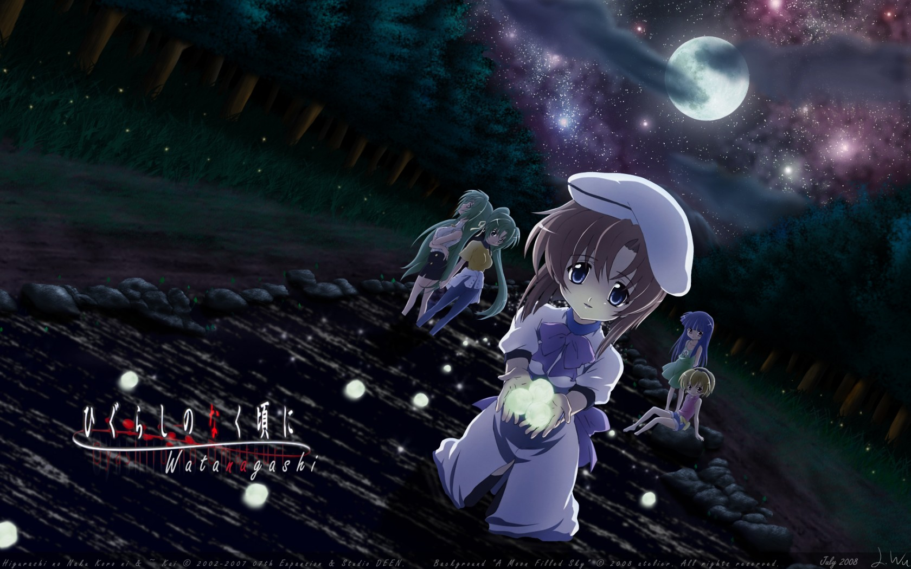
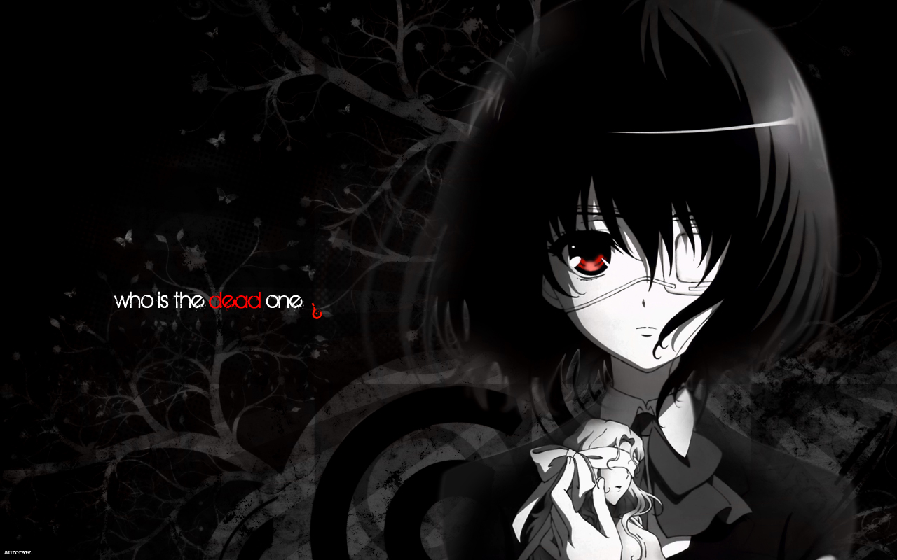
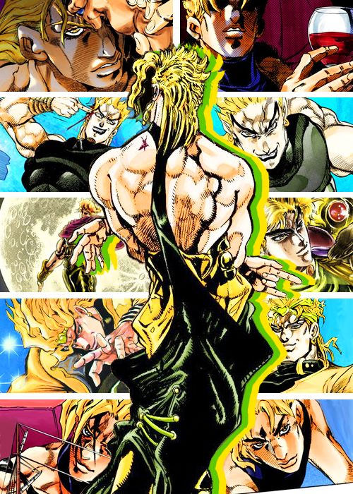
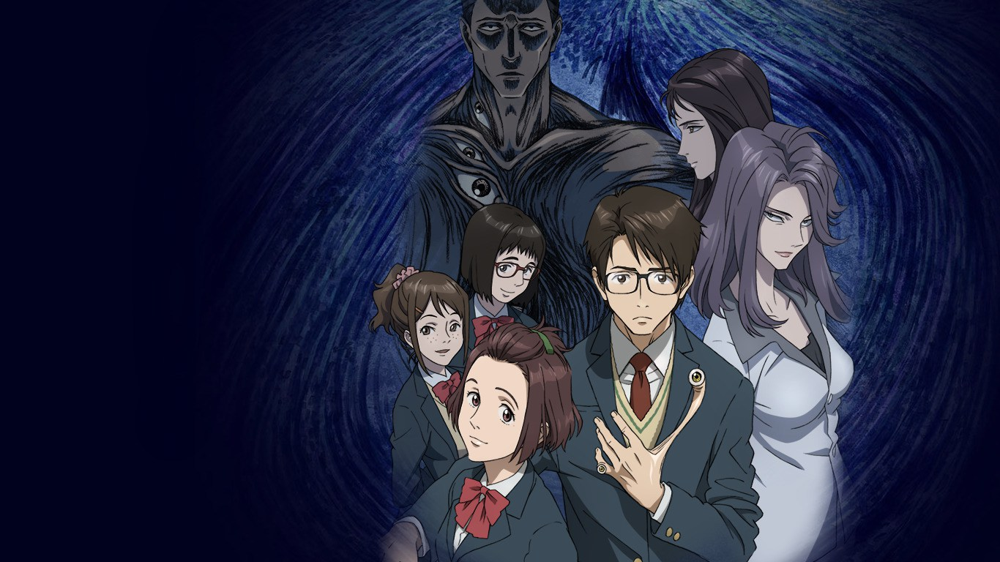

5: Higurashi no Naku Koro ni Gou
Ratings : 🌟 7.1
English Name : Higurashi: When They Cry – Gou
Genre : MysteryHorrorSupernaturalThrillerPsychological
Seasons : 1
Episodes : 24
Air-Date : 1-October-2020
Watch-Time : 24 min.(Per Ep.)
Synopsis:
Rika Furude and her group of friends live in the small mountain village of Hinamizawa; in June 1983, they welcome transfer student Keiichi Maebara into their ranks, making him the only boy in their group. After school, they have fun playing games and spending each day living their lives to the fullest. Despite this seemingly normal routine, Keiichi begins noticing strange behavior from his friends, who seem to be hiding the town's dark secrets from him.
Elsewhere, a certain person watches these increasingly unsettling events unfold and remembers all the times that this, and other similar stories, have played out. Using that knowledge, this person decides to fix these broken worlds. However, when certain variables change, the individual is faced with a horrifying realization: they have no idea what to expect or how to stop the impending tragedy.
4: Another
Ratings : 🌟 7.6
English Name : Another
Genre :MysteryHorrorSupernaturalThrillerSchool
Seasons : 1
Episodes : 12
Air-Date : 10-January-2012
Watch-Time : 24 min.(Per Episode)
Synopsis
In 1972, a popular student in Yomiyama North Middle School's class 3-3 named Misaki passed away during the school year. Since then, the town of Yomiyama has been shrouded by a fearful atmosphere, from the dark secrets hidden deep within.
Twenty-six years later, 15-year-old Kouichi Sakakibara transfers into class 3-3 of Yomiyama North and soon after discovers that a strange, gloomy mood seems to hang over all the students. He also finds himself drawn to the mysterious, eyepatch-wearing student Mei Misaki; however, the rest of the class and the teachers seem to treat her like she doesn't exist. Paying no heed to warnings from everyone including Mei herself, Kouichi begins to get closer not only to her, but also to the truth behind the gruesome phenomenon plaguing class 3-3 of Yomiyama North.
Another follows Kouichi, Mei, and their classmates as they are pulled into the enigma surrounding a series of inevitable, tragic events—but unraveling the horror of Yomiyama may just cost them the ultimate price.
3: JoJo no Kimyou na Bouken
Ratings : 🌟 8.1
English Name : JoJo's Bizarre Adventure
Genre : ActionAdventureHorrorSupernaturalShounen
Seasons : 4
Episodes : 26(Per Season)
Air-Date : 6-October-2012
Watch-Time : 24 min.(Per Ep.)
Synopsis:
In 1868, Dario Brando saves the life of an English nobleman, George Joestar. By taking in Dario's son Dio when the boy becomes fatherless, George hopes to repay the debt he owes to his savior. However Dio, unsatisfied with his station in life, aspires to seize the Joestar house for his own. Wielding an Aztec stone mask with supernatural properties, he sets out to destroy George and his son, Jonathan "JoJo" Joestar, and triggers a chain of events that will continue to echo through the years to come.
Half a century later, in New York City, Jonathan's grandson Joseph Joestar discovers the legacy his grandfather left for him. When an archeological dig unearths the truth behind the stone mask, he realizes that he is the only one who can defeat the Pillar Men, mystical beings of immeasurable power who inadvertently began everything.
Adapted from the first two arcs of Hirohiko Araki's outlandish manga series, JoJo no Kimyou na Bouken follows the many thrilling expeditions of JoJo and his descendants. Whether it's facing off with the evil Dio, or combatting the sinister Pillar Men, there's always plenty of bizarre adventures in store.
2: Kiseijuu: Sei no Kakuritsu
Ratings : 🌟 8.4
English Name : Parasyte: The Maxim
Genre : ActionSci-FiHorrorPsychologicalDramaSeinen
Seasons : 1
Episodes : 24
Air-Date : 9-October-2014
Watch-Time : 24 min.(Per Ep.)
Synopsis:
All of a sudden, they arrived: parasitic aliens that descended upon Earth and quickly infiltrated humanity by burrowing into the brains of vulnerable targets. These insatiable beings acquire full control of their host and are able to morph into a variety of forms in order to feed on unsuspecting prey.
Sixteen-year-old high school student Shinichi Izumi falls victim to one of these parasites, but it fails to take over his brain, ending up in his right hand instead. Unable to relocate, the parasite, now named Migi, has no choice but to rely on Shinichi in order to stay alive. Thus, the pair is forced into an uneasy coexistence and must defend themselves from hostile parasites that hope to eradicate this new threat to their species.
1: Tokyo Ghoul

Ratings : 🌟 7.9
English Name : Tokyo Ghoul
Genre : ActionMysteryHorrorPsychologicalSupernaturalDramaSheinen
Seasons : 4
Episodes : 12(Per Season)
Air-Date : 4-July-2014
Watch-Time : 24 min.(Per EP.)
Synopsis:
Tokyo has become a cruel and merciless city—a place where vicious creatures called “ghouls” exist alongside humans. The citizens of this once great metropolis live in constant fear of these bloodthirsty savages and their thirst for human flesh. However, the greatest threat these ghouls pose is their dangerous ability to masquerade as humans and blend in with society.
Based on the best-selling supernatural horror manga by Sui Ishida, Tokyo Ghoul follows Ken Kaneki, a shy, bookish college student, who is instantly drawn to Rize Kamishiro, an avid reader like himself. However, Rize is not exactly who she seems, and this unfortunate meeting pushes Kaneki into the dark depths of the ghouls' inhuman world. In a twist of fate, Kaneki is saved by the enigmatic waitress Touka Kirishima, and thus begins his new, secret life as a half-ghoul/half-human who must find a way to integrate into both societies.